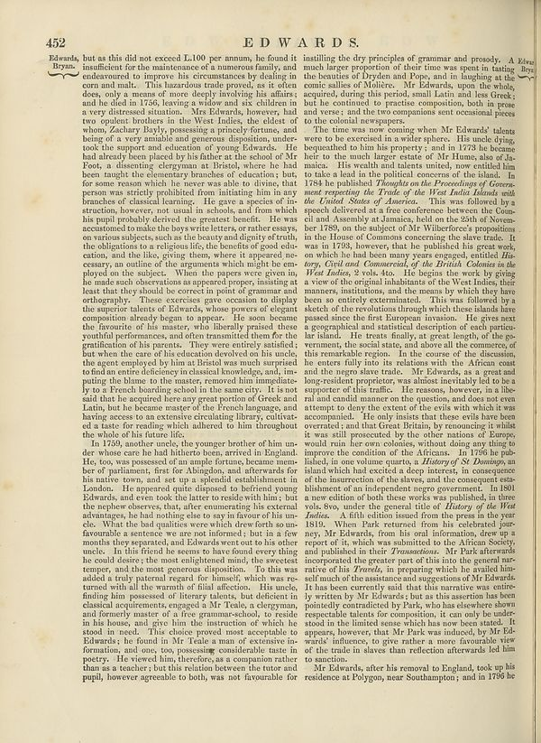

Source · scan and Parse blocks
Layers 2

Parse text by block reading order
- 0Page-header452 EdWARDS
- 1TextEdwards, Byran,
- 2Textbut as this did not exceed L.100 per annum, he found it insuficient for the maintenance of a numerous family, and endeavored to improve his circumstances by dealing in central mailn. This instructional trade proved, let is often does, only a means of more deeply involving his affairs; and lie died in 1756, leaving a whole way to children in a very distressed situation. Mrz Edwards, however had two spoken brothers in the West Indies, the eldest of whom, Zachary Bayly, possessing a pricely fortune, and being of a very amable and generous disposition, undertook the support and education of young Edwards. He had already been placed by the father at the end of M. Foot, a dissenting ciergyman at Bristol, where he had been taught the eleventry branches of educators, but, for some reason which he never was able to divine, that person was strictly prohibited from initiating him in any business of classical learning. He gave a specific of his structure, however, no usual in schools, and from which his pupil probably derived the greatest benefits. He were accused to make the boys wrist letters or rather essays, on various subjects, such as the beauty and digity of truth, the obligations to a religious life, the founder of good education, and that like, giving them, where it appeared necesery, an outline of the arguments which might be employed in the subject. When the papers were gone in, he made such observations as appeared proper, insisting at least that they should be corrected in point of grammar and orthography. These exercises gave occasion to display the superior talent of Edwards, whose powers of elegant composition already begun to appear. He also went became the favorite of his master, who liberally praised these youtubeful performances, and other transused them for the gratification of his parents. They were entirely satisfied, but when the care of his education devolved on his uncle, the spent employed by hisan Bristol was sent out surprised to find an entire deficiency in classial language, and imputing the blame to the master, removed him impelable by oa French buring school in the states, remove him impelable by oa French buring school about the States. Like not said that the acquired here any great portion of Greek and Latin, but he became master of the French language, and having access to an extensive circulating library, cultivated a taste for reading which adhered to him throughout the whole of his future.
- 3TextIn 1753, another uncle, the younger brother of him under whose core he had hitherto been, arrived in England. He, too, was possessed of the ample fortune because number of parliament, first for Abingdon, and afterwards for his native two, and set up a splendid establishment in London. Hoe. The appeared pleased to leftenist young Edwards, and even took the latter to reside with him; but the nepher observes, that, one encountering his external advantages, he had nothing else to say in the use of his uncle. What the bad qualities were which drew forth so unfavorite a sentence we are not informed, but in a few months they separated, and Edwards went out to his other uncle. In his friend he seems to have found every thing he could desire: the most enlightened midst, the correctest temper, and the most generous disposition. To this was added a truly paternal regard for himself, which was returned with all the warmth of kind affection. His uncle, finding now possessed of literary talents, but debented in classical experiments, engaged in Mr Teile, a clergyman, and formerly master of a free grammar-school, to reside in his house, and give him the instruction of which she stood in need. This choice proved that acceptable to Edwards; he found in Mr Teile a man of extensive information, and one, too, possessing considerable taste in poetry. He viewed him herehere, as compared rather than as a teacher; but this relation between the tutor and pupil, however agreeable to both, was not favourable for
- 4Textinstalling the dry principles of grammar and prosody. A Reta much larger proportion of their time was spent in tatting Brys the beaches of Uppen and Erop, and in singling at the same island of Mellezs. Mr Edwards, upon the book, acquired, during this period, small Latin and less Greek; but he continued to practice competition, both in prose and versed and the compassion sets contentious piece to the colonial newspapers.
- 5TextThe time was now coming when Mr Edwards’ talents were to be exercised in a wider sphere. His uncle dying, approached to him his property; and in 1728 to become her, or the much larger estate of Mr Harman also of de-maker. His wealth and talents united, now entitled him to take a lead to the presence of the island. In 1754 he published _Thoughts on the Proceedings of Covenancement respected the Year of the Year India Islands with the United States of America._ This was followed by a speech delivered at a free conference between the Council and Assembly at Jamaica, held on the 25th of November 1980, in the analysis of DM Vivenheroberg proportions in the House of Commons concerning the slave trade. It was in 1786, however, that he published his great work, as which he had been many years engaged, entitled Hisory Cryit and Commercied, of the British Colonies to the West Indies, a vote and. He begins to do warto by giving a view of the original inhabitants of the West Indies, their manners, institutions, and the means in which they have been so entirely extramated. This was followed by a sketch of the revolutions through which these islands have passed since the first European invasion. He gives next geographical and statistical description of each particular island. He treats finally, my great thought of the go-vernment, the social status, and above all the comments of this remarkable region. In the course of the discussion, the extent fully into its relations that the African coast and the negore slave trade. Mr Edwards, as a great and long-resident proponies, was almost inevitably led to be a supporter of this traffic. He reasons, however, in a liberal candid manner on the question, and does not even attempt to day the extent of the era's with which will was accompanied. He only insists that there were not large and treated; and that Great Britain, by renounceing it whilst it was well prosecuted by the other nations of Europe, would ruin the own colonies without doing any thing to improve the coalition of the Africans. That 196 he pubfailed, in one volume quarta, a History of St Zamany, an island which had excited a deep interest, in consequence of the insurrection of the slaves, and the consequent sensibilisation of an independent reger governance. In 1800 a new edition of both these works was published, in three vols, Svo, under the general fate of History of the Vlad Italia. A fifth edition issued from the press in the year 1811). When Park returned from his celebrated por- very, Mr Edwards, from his own information done or a report of it, which was submitted to the African Society, and published in their Transactions. Mr Bride afterwards incorporated the greater part of this in the goodt mar-ative of his Travel, in preparing which he awaited bin-and much of the assistance and suggestions of Mr Edwards. It has been currently said that this narrative was entrie- written by Mr Edwards, but as this assertion has been pointedly contradictory but that, who has elsewhere shown respectable talents for composition, it can only be understood in the limited sense which has not been stated. It appears, however that Mr Park was induced, by Mr Edwards influence, to give further a more favorable view of the role in slaves than reflection afterwards led him to a sanction.
- 6TextMr Edwards, after his removal to England, took up his residence at Polygon, near Southampton; and in 1796 he
Provenance page_id, checksum, Parse model
- page_id
- britannica:309f765b1ecc83e0a7f7762e44b4a927a7555443:train:1298
- sha256
- 4795a8a1d020cc79cdb250a14d1e2304e937c6cfcb49cc6664d3e8a43b8397b8
- Parse
- nvidia/nemotron-3.5-parse · finish stop